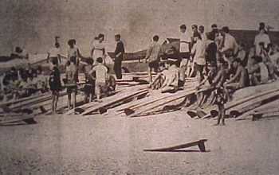
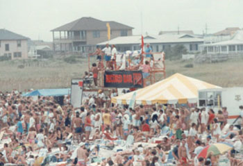

The first link goes Home . The second link is Research . The third link is Services . The fourth link is Collections . The fifth link is About . The sixth and last link is Ask a Librarian!

Surfing Contests in the Cape Fear Region
Below is a listing of surfing contests that have been held in the Cape Fear Region of North Carolina. Please note that this is a work in progress and incomplete. If you know of a contest or significant occurrence that you would like to share, or feel that there may be an error in the information included below, please contact Peter Fritzler, fritzlerp@uncw.edu| Contests in Southeastern North Carolina, 1965-1968 |
 Surfers at the 2nd Annual Surfing Contest. May 28-29, 1966. 
Record Bar Pro-Am, 1985. Courtesy: Robert Dittmer |
Page created and maintained by:Peter Fritzler, Randall Library, University of North Carolina Wilmington
First online: March 2002
Last update: 24 September 2009
Citing This Page:
"Surfing Contests in the Cape Fear Region." Cape Fear Surfing Archive. William Randall Library, University of North Carolina Wilmington. [Created: March 2002; Updated: 24 September 2009; Cited]. Available from http://library.uncw.edu/surf/contests.